如果在我们的文字描述和截图中均未涉及的选项或者页面，取默认值即可。
本章节我们配置和安全相关的内容（账号，权限等）。
如果已经有AWS的控制台登录账号，用接下来的这个 URL 直接登录即可，可以略过获取账号这部分（但是建议有对应管理权限），需要注意的是我们演示的环境为AWS的新加坡区域，如果学员使用的是国内的区域，则略有区别，仅供参考。
AWS控制台地址
https://console.aws.amazon.com/console/home
如果是参加现场实验的学员，你会获得一个现场指导老师发给你的 hash 码，类似这样的
4b8b-0bd9571f14-c4
可以通过如下方式登录实验环境（请自动替换你拿到的 hash 码）
https://dashboard.eventengine.run/login?hash=4b8b-0bd9571f14-c4
通过这个地址登录AWS控制台（第一次需要接受系统协议的提醒） 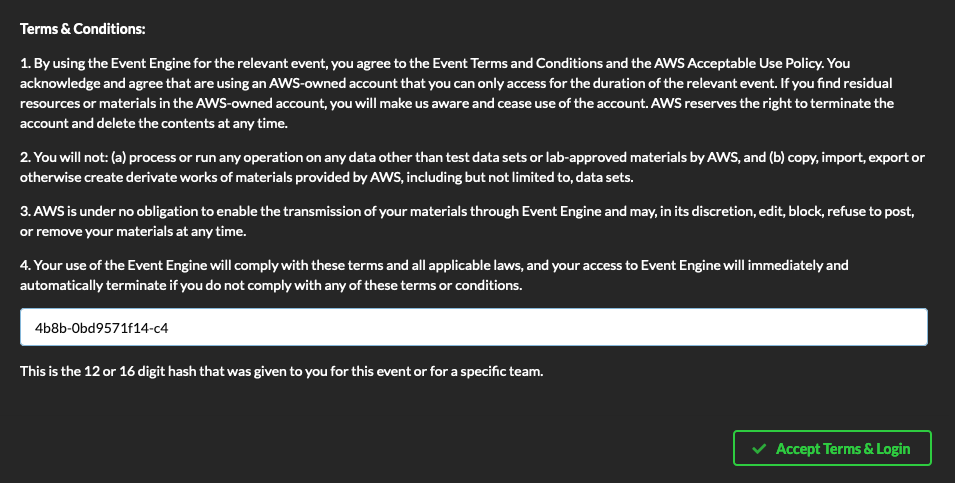
选择登录控制台 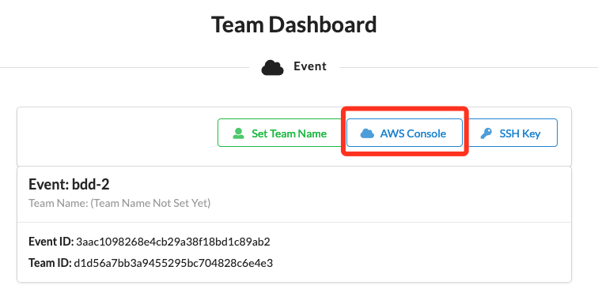
点击“Open AWS Console”直接打开控制台（不需要输入用户密码这些，默认具备管理员权限），请注意绿色方框的 Region 是否正是ap-southesat-1（对应新加坡区域） 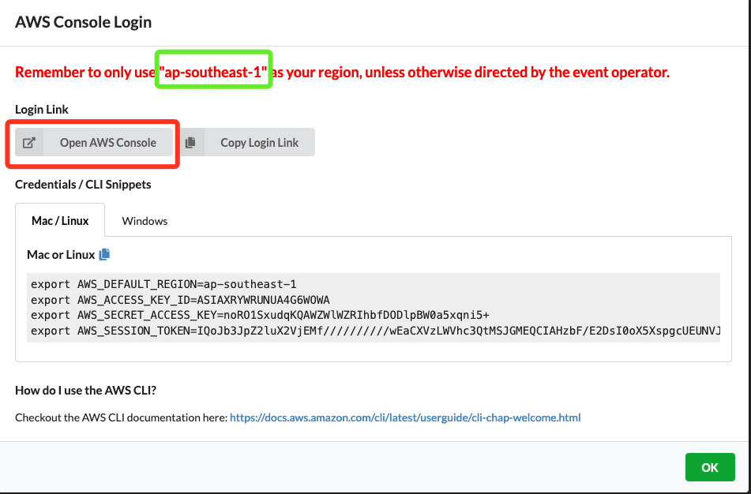
其他未提醒的内容不用关注，后面需要用到会有提醒的。
IAM（Identity and Access Management）是AWS和用户，权限以及认证等安全相关的服务，此处我们主要配置一个只能编程使用的用户（此处为获取对应的aksk，因为市场活动默认的 Hash 码的登录用户不能自己给自己创建 aksk），一个授权的角色（Role）。
通过如下方式打开IAM控制台 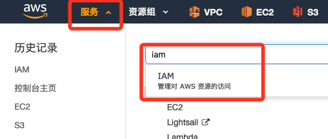
点击左边的“用户”菜单，然后选择“添加用户” 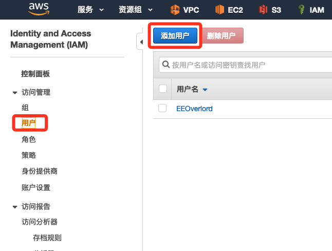
设置用户名（例如此处为cliuser，只选择“编程访问”（获取一对aksk），然后选择“下一步：权限”
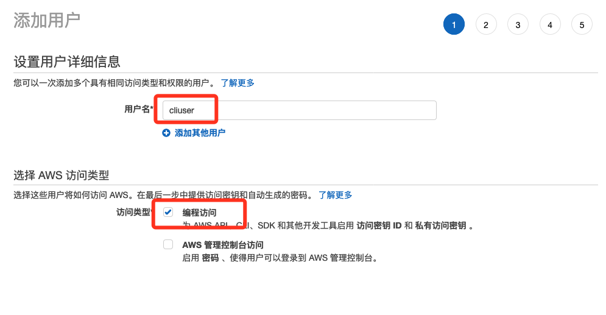
在设置权限的页面，点击“直接附加现有策略”，添加 AdministratorAccess 和 IAMFullAccess 两个
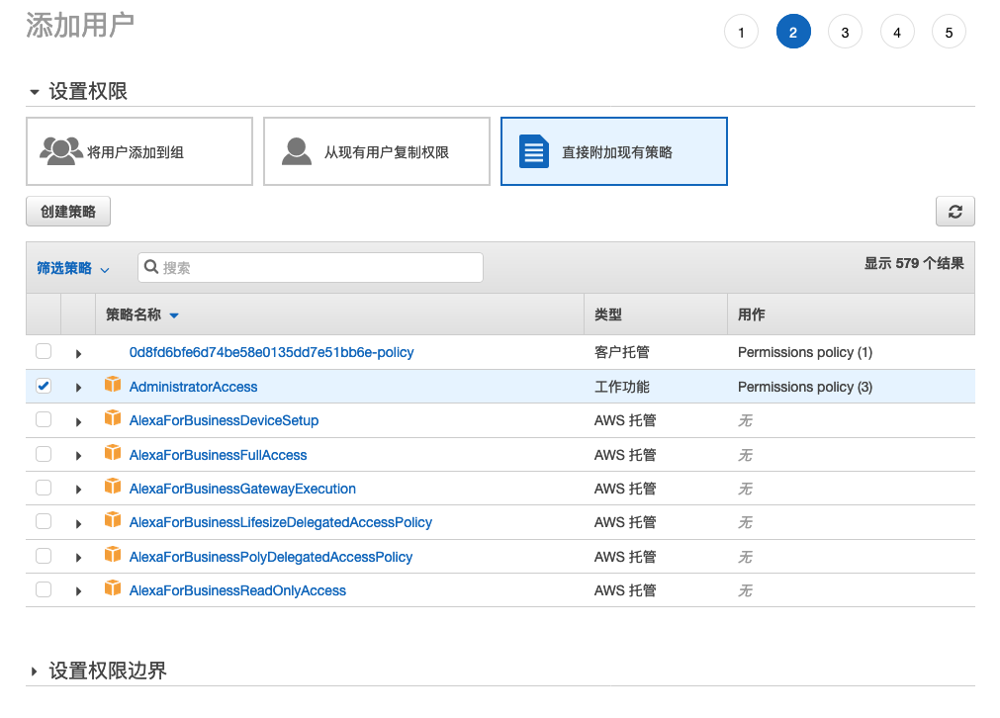
下一步标签页面可以不配置，接着下一步审核页面，确认策略已经正确添加 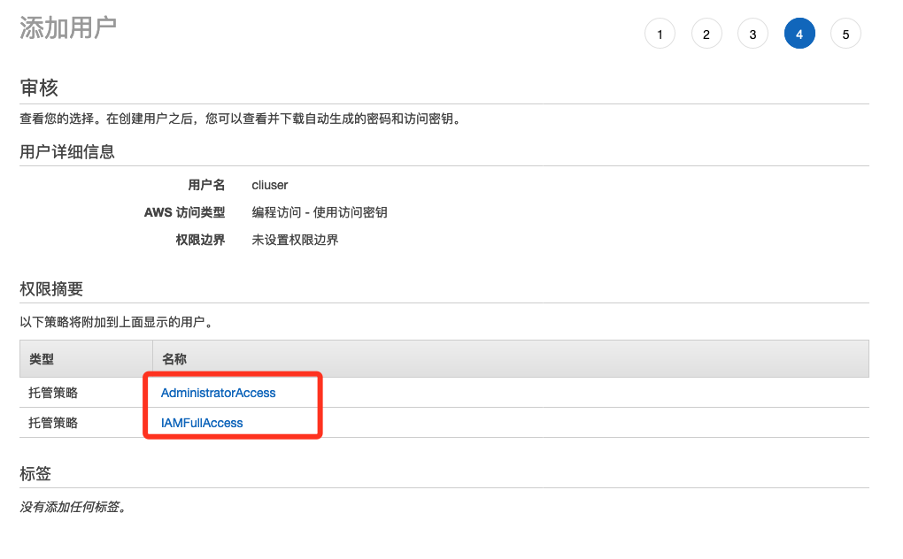
用户创建成功后，有个AKSK（“访问密钥ID”又叫“AK”，“私有访问密钥”叫“SK”）需要妥善保存（仅此一次保存csv文件的机会），当然，在创建用户的时候，SK也可以看到明文（仅此一次在控制台看到SK的明文的机会，以后就只能去csv文件看）。 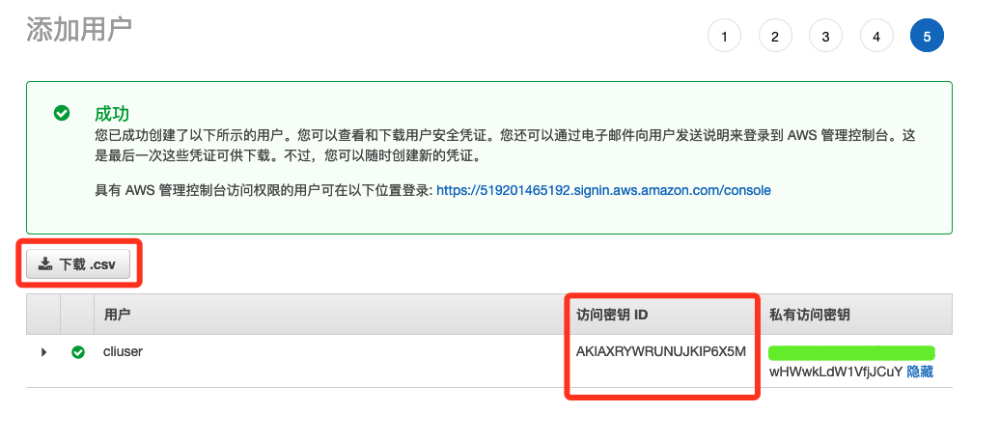
在IAM控制台，选择左边的“角色”菜单，然后选择“创建角色” 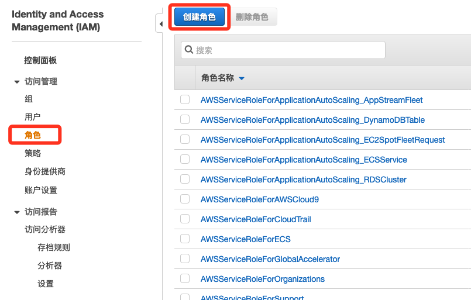
选择对应的角色类型（选择“AWS产品”，然后选择“Glue”） 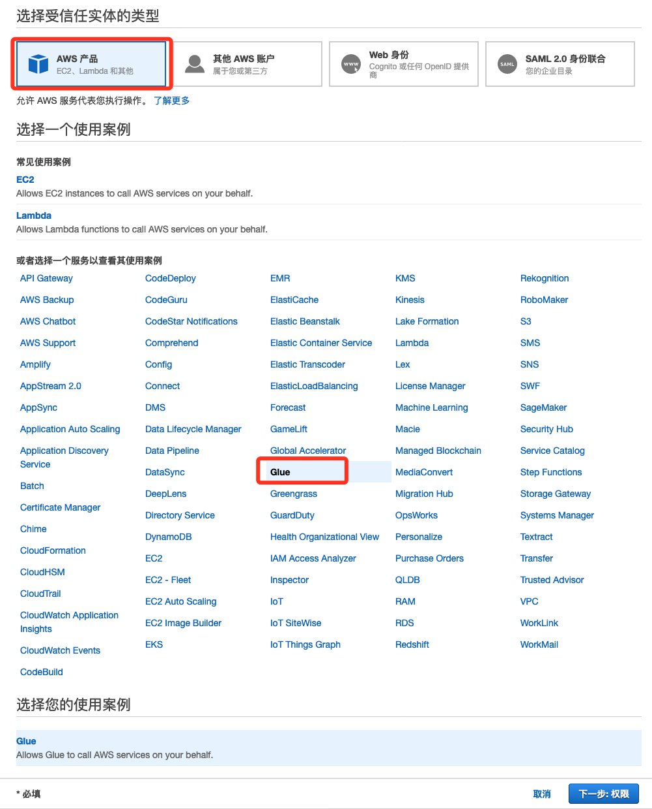
在筛选策略的页面，选中 AdministratorAccess 和 IAMFullAccess，然后点击下一步，不配置标签，直接审核角色配置，设置名字（此处为lab-role），确认策略，然后确认即可
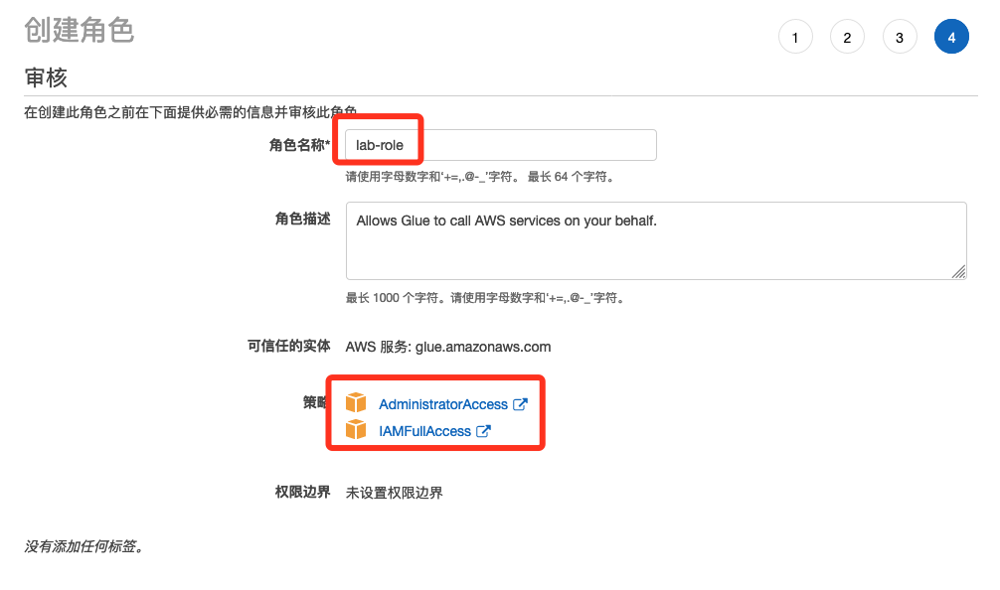
恭喜你，已经完成第一步的实验准备工作。